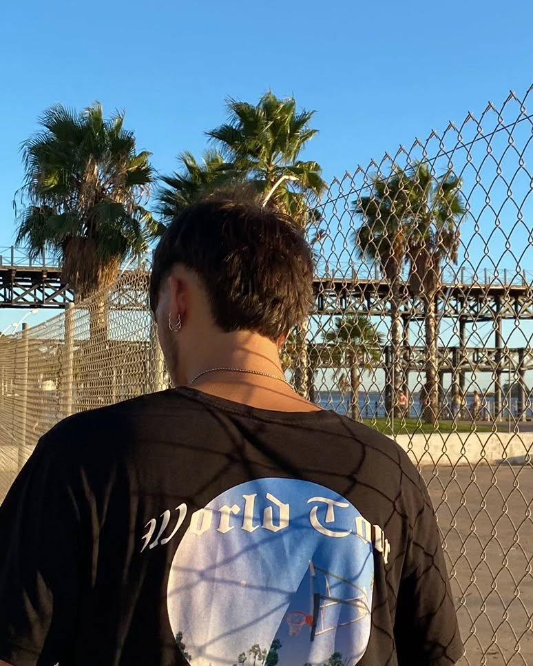

Sobre mí
Soy un Desarrollador de Software, actualmente cursando un máster en diseño web y FullStack Developer, apasionado por el aprendizaje continuo y orientado a la resolución de desafíos lógicos. Con una sólida base en desarrollo de software, especialmente en entornos Back-End, busco una oportunidad laboral para aplicar y expandir mis conocimientos en un equipo colaborativo que impulse mi crecimiento y fomente mi curiosidad profesional.